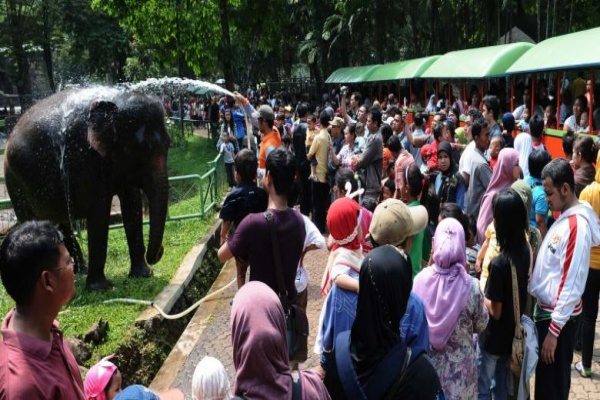
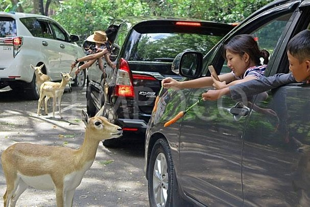

Jam Operasional Taman Safari Indonesia
- Senin - Jumat, pukul 09.00 s.d 17.30 WIB.
- Sabtu - Minggu, pukul 08.30 s.d 17.30 WIB. Jam operasionalnya pukul 08.30-17.30 WIB.
- Untuk Safari Malam setiap malam minggu dan malam liburan pada pukul 19.00 s.d 23.00 WIB.
Harga Tiket Masuk Taman Safari Indonesia
Berikut daftar harga tiket Taman Safari Bogor yang perlu kalian ketahui:
- Tiket Safari Siang. Weekday, harga tiketnya adalah Rp.170.000,- untuk anak dan Rp.195.000,- untuk dewasa. Weekend, harga tiketnya Rp. 210.000,- untuk anak dan Rp. 230.000,- untuk dewasa.
- Tiket Safari Malam. Harga tiket untuk anak adalah Rp. 160.000,- dan Rp. 180.000,- untuk dewasa.
- Tiket Safari Trek & Outbound Perorangan. Harganya Rp. 100.000,-. Tersedia khusus weekend, dan minimal kuota peserta 10 orang.
- Tiket Safari Trek & Outbound untuk Grup. Harganya adalah Rp. 125.000,- per orang. Minimal kuota 25 orang pada weekday dan 10 orang pada weekend.
Fasilitas Umum Yang Ada di Taman Safari Indonesia
Demi menunjang kenyamanan para pelanggan yang berkunjung. Taman Safari Indonesia telah menyediakan berbagai macam fasilitas umum yang dapat anda gunakan. berikut beberapa fasilitas umum yang akan anda dapatkan di Taman Safari Indonesia.
- Toilet
- mushola
- stand makanan
- outlet souvenir
- penginapan yang berupa bungalow dan rumah pohon
Lokasi Taman Safari Indonesia
Alamat Taman Safari Bogor berada di Jalan Raya Puncak No. 601. Untuk rutenya, Sahabat KeNai yang dari arah Jakarta kemudian masuk ke Tol Jagorawi kemudian keluar di Ciawi dan melanjutkan perjalanan menuju Cisarua, Bogor. Saat sampai Jalan Raya Puncak, belok kanan kemudian masuk Jalan Taman Safari.
Galeri Foto Taman Safari Indonesia

